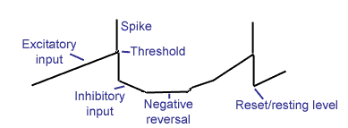

Our spiking cells are all based on a simple integrate and fire (IF) neuron. The cell has an internal state--its membrane potential--which integrates the cell's input over time. The input can be either excitatory (increases the potential) or inhibitory (decreases the potential). The integration is leaky: If an input dumps some "charge" onto the membrane, thcharge will leak away after a second or so. If the membrane potential crosses the threshold, a spike is emitted and the membrane is reset to the resting level. The membrane potential is clamped by the spike threshold on the positive side, and by a negative limit on the other side.

This IF model is about as simple
as you can get. It does not simulate the many currents present during
real spikes. It neglects many interesting and probably important aspects of real
spike generation mechanisms, including the very perceivable spike rate
adaptation mechanisms that act like high-pass filters in the spike rate domain.
These in reality prevent sustained bursts at high spike rates, which would make
it difficult to apply DC stimuli to real cells and hear any perceivable
response. That's why neurophysiologists rarely apply static stimuli--the
responses are very small.